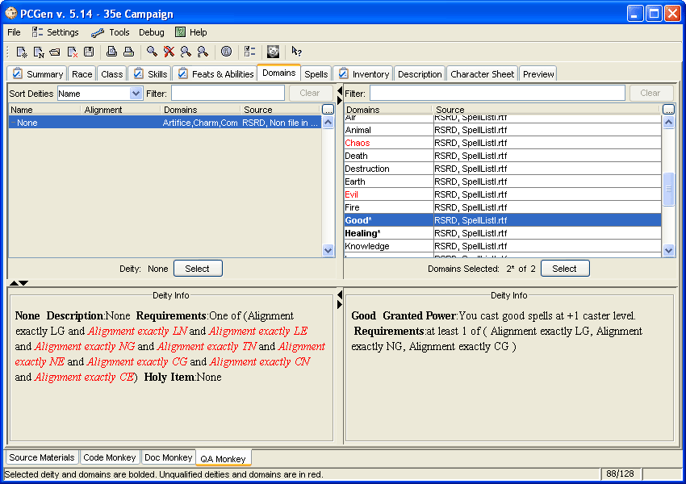

This is the Domain tab where Gods are chosen for the PC if they have a class which requires the use of deities.
The table in the upper-left contains the list of "Available" deities. Click on one that the PC is qualified for (the name isn't in red italics) and then click on the "Select" button to select it. Once a deity is chosen the Domain table in the upper-right will be populated with the appropriate domains. The number of domains the user can choose and the number of domains they have chosen will be indicated.
When clicking on a deity the details about it will be displayed in the lower-left window. Likewise, clicking on a domain will cause its details to be displayed in the lower-right window.
Right clicking on any deity name will supply you with an option to create your own deity. Alternately you can go to the Menu, Tools, List Editors, Deity Editor to create a new deity from scratch.